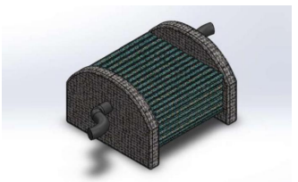
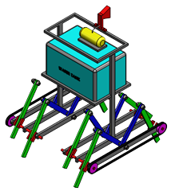
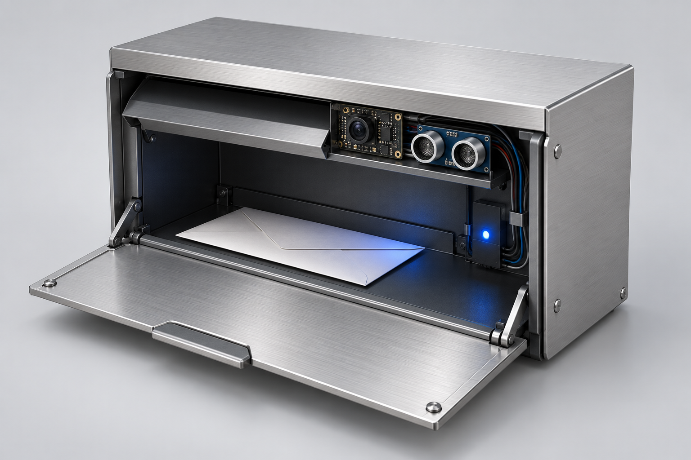
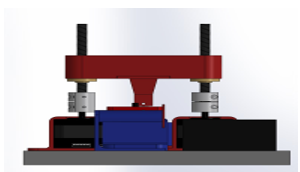
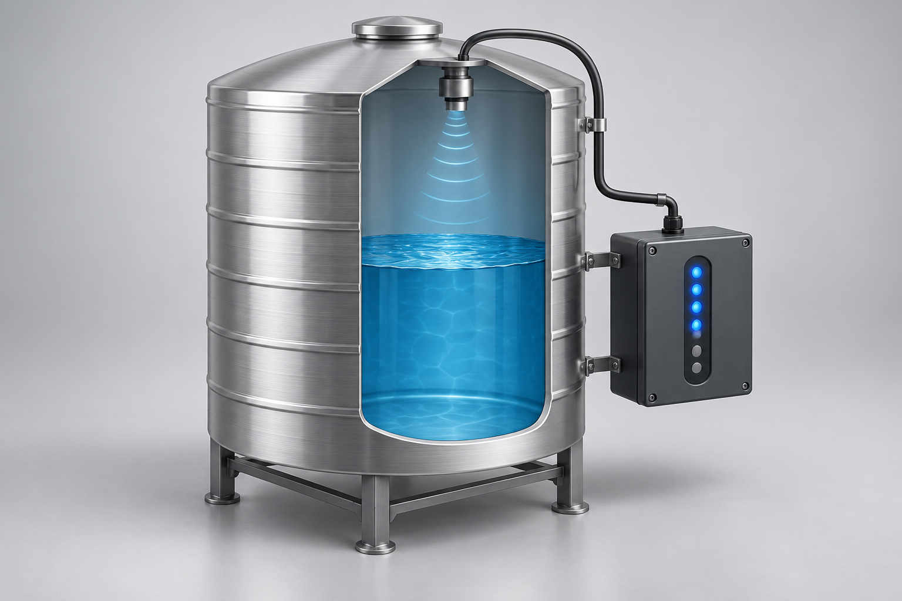
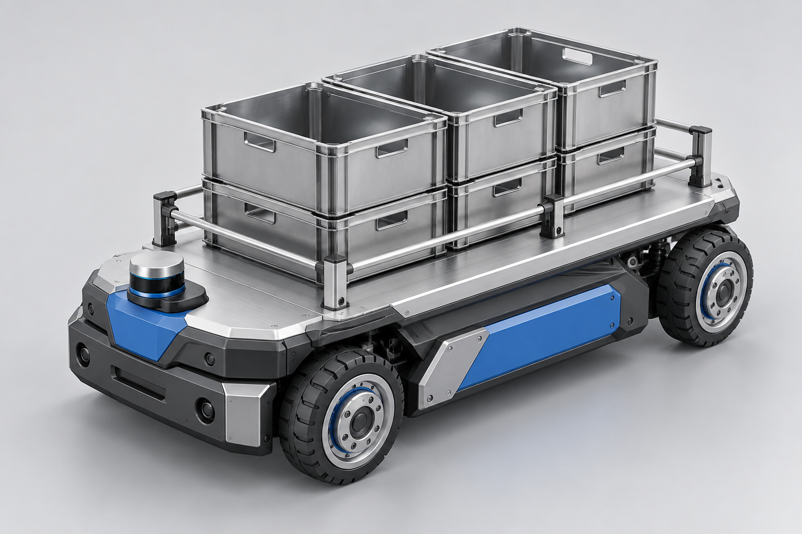

PATENTED CONCEPT · AUTOMATION
Automated self-cleaning desk.
A patented concept exploring automated desk cleaning, bringing mechanical design and automation to an everyday workspace.
ENGINEERING MEETS ENTERPRISE
I’m Eric, a Mechatronics Engineer with Honours.
I build connected systems, explore robotics,
and turn everyday problems into practical solutions.
01 / SELECTED WORK
From a sensor to a system.
From a problem to a prototype.

A patented concept exploring automated desk cleaning, bringing mechanical design and automation to an everyday workspace.

A walking pesticide-spraying platform combining two quadruped mechanisms with a gear and chain drive. Humidity sensing and an ESP32 camera support remote field observation.

Sensor-based monitoring with an ESP32-CAM and Blynk, connecting a physical mailbox to a mobile interface.

A mechatronics project focused on automating repetitive wire-cutting work and exploring repeatable machine operation.

Making tank levels easier to monitor through a practical sensor-based system.

A garment-industry material-handling project designed around loads of up to two tonnes.
02 / THE NEXT CHAPTER
I’m building Gil-gal to help local vendors manage their shops and connect with customers. The idea brings everyday store operations and product discovery into one connected ecosystem.
Planned billing, barcode-based stock entry and exit, and a clear transaction history.
Planned sales insights to identify fast-moving products and guide restocking decisions.
A dedicated vendor experience for publishing products and helping customers discover local sellers.

MEET THE TEAM
Co-Founder & Marketing Head
Give local businesses useful technology that fits the way they actually work.
03 / BEHIND THE WORK
I am a Mechatronics Engineer with a Bachelor of Engineering (Honours) from Sri Krishna College of Engineering and Technology. I’m interested in the space where mechanical systems, electronics, and software meet.
My work spans robotics, embedded systems, IoT, and automation, alongside web design and development. I create polished, responsive websites that bring ideas to life through thoughtful interfaces. Alongside engineering, I’m developing Gil-gal around the everyday needs of local vendors and customers.
HANDS-ON EXPERIENCE
Assembly and testing; Arduino-based obstacle detection and line-following robotics.
Industrial internship · Coimbatore